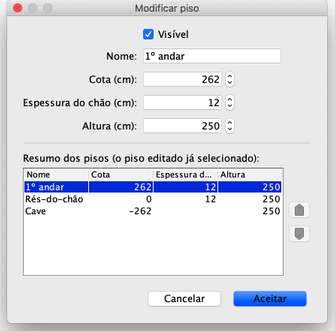

Pode editar a visibilidade, o nome, a cota e as alturas de um piso fazendo duplo clique no seu separador, ou escolhendo Planta > Pisos > Modificar piso...
A janela de modificação de um piso permite-lhe editar os seus atributos, mas também mostra uma tabela
descrevendo todos os pisos de uma casa onde a linha seleccionada corresponde ao piso actualmente em edição.

A espessura do chão é usada para calcular o contorno vertical à volta de um chão na vista 3D. Esta
superfície é visível à volta de aberturas no chão e no contorno de uma varanda ou mezanino (ou sobreloja).
A cota de um piso pode ser positiva ou negativa. No último caso, o solo será automaticamente cavado na vista 3D de cada vez
que uma peça de mobiliário, divisão ou um conjunto fechado de paredes seja adicionado ao subsolo. Esta funcionalidade
pode ser usada para colocar uma piscina no solo ou para criar uma cave com um ou mais pisos. |